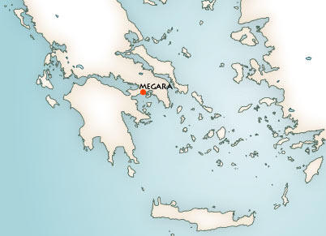
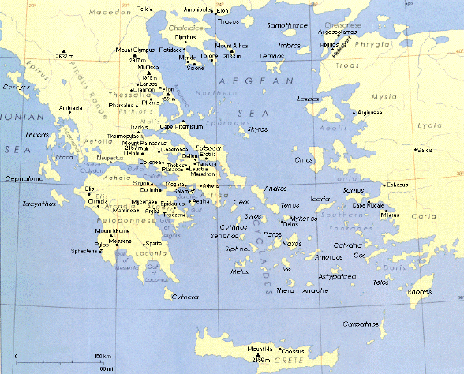

|
 |
Cidade da região de Ática, localizada no Golfo de
Sarônico, é hoje um subúrbio de
Atenas.
Os mais antigos
registos datam-na do século VIII a. C., altura em que se envolve em disputas
territoriais com Corinto.
Da expansão de Atenas no século VI a. C. resultou para Mégara a perda das ilhas de Salamina
e do porto de Niseia. Durante a segunda metade desse século
a cidade floresceu devido ao comércio o que possibilitou a
construção de
diversos edifícios públicos. As figuras mais importantes
desta época foram o engenheiro Eupalinos e o poeta
Teogones. Em 460
a. C., associou-se a Atenas contra Corinto.
Porém, em 432 a. C., Atenas proibiu os navios de Mégara de encostar a todos os portos comerciais controlados por Atenas. esta foi uma das razões para a Guerra do Peloponeso (431 - 404 a. C.), na qual Mégara foi um dos aliados de Esparta.
No século IV a. C., tornou-se uma cidade
pacífica, o que contribuiu para a sua expansão económica. Durante este período,
cunhou a sua própria moeda em prata, tendo como símbolo a cabeça de Apolo e uma
lira.
